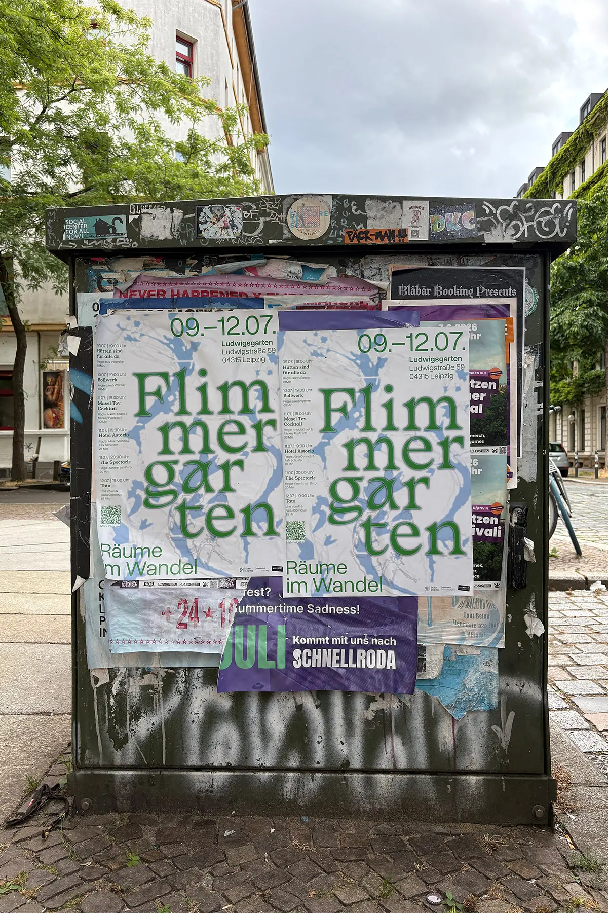
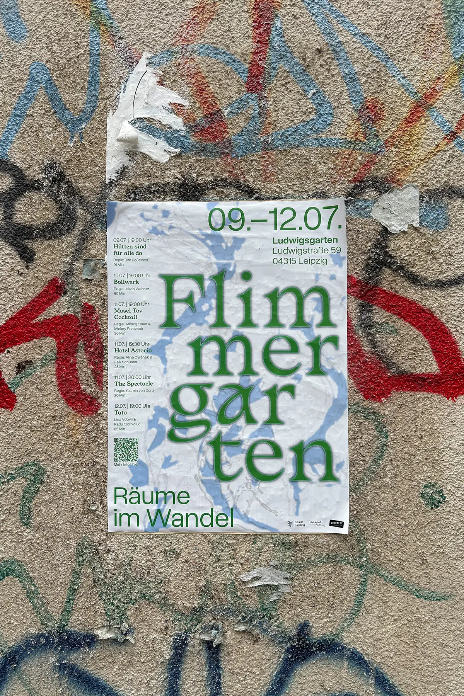

Der Flimmergarten 2026 zeigt Filme über das Bleiben und Gehen, über Familien, Erinnerung und neue Heimaten. Zwischen Leipziger Geschichte, Migration, gesellschaftlichem Wandel und persönlichen Kämpfen entstehen Geschichten von Zugehörigkeit, Wandel und Hoffnung. Dabei stellt das Dokumentarfilmfestival die Frage: Was bedeutet Zuhause eigentlich?
Das visuelle Erscheinungsbild übersetzt diese Themen in ein Spiel zwischen Verwurzelung und Bewegung. Im Hintergrund stehen Pflanzenabbildungen aus einem Leipziger Herbarium. Sie verweisen auf den konkreten Ort des Festivals und auf die Idee von Wachstum, Herkunft und Verwurzelung. Gleichzeitig werden die filigranen botanischen Zeichnungen durch transparente Flächen und Überlagerungen aus ihrem ursprünglichen Kontext gelöst und zu einer atmosphärischen, fast schwebenden Bildwelt. Weiche Unschärfen und Überlagerungen erzeugen ein flimmerndes, bewegtes Erscheinungsbild.
Plakatdesign